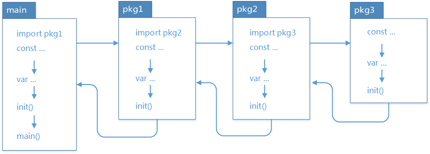

go程序初始化顺序
在一个 go 程序中通常包含：包、常量、变量、init()、main()等元素，如果同时存在多个包，包之间存在依赖关系，每个包中存在多个 init 函数，每个文件中存在多个 init 函数，那么问题来了，他们之间的执行顺序是什么样的？通过本文我们来对它们之间的执行顺序做尽可能详尽的说明。如有不正之处，欢迎批评指正。
包的执行顺序
- 在 main 包中的 go 文件默认总是会被执行
- 同包下的不同 go 文件，按照文件名“从小到大”排序顺序执行
- 其他的包只有被 main 包 import 才会执行，按照 import 的先后顺序执行
- 被递归 import 的包的初始化顺序与 import 顺序相反，例如：导入顺序 main –> A –> B –> C，则初始化顺序为 C –> B –> A –> main
- 一个包被其它多个包 import，但只能被初始化一次
- main 包总是被最后一个初始化，因为它总是依赖别的包
- 避免出现循环 import，例如：A –> B –> C –> A
go 程序的初始化顺序见下图：

init 和 main 函数
init()、main() 是 go 语言中的保留函数，两个函数在 go 语言中的区别如下：
相同点：
- 两个函数在定义时不能有任何的参数和返回值
- 该函数只能由 go 程序自动调用，不可以被引用
不同点：
- init 可以应用于任意包中，且可以重复定义多个。
- main 函数只能用于 main 包中，且只能定义一个。
两个函数的执行顺序：
- 对同一个 go 文件的 init( ) 调用顺序是从上到下的
- 对同一个 package 中的不同文件，将文件名按字符串进行“从小到大”排序，之后顺序调用各文件中的init()函数
- 对于不同的 package，如果不相互依赖的话，按照 main 包中 import 的顺序调用其包中的 init() 函数
- 如果 package 存在依赖，调用顺序为最后被依赖的最先被初始化，例如：导入顺序 main –> A –> B –> C，则初始化顺序为 C –> B –> A –> main，一次执行对应的 init 方法。
常量、变量、init()、main()
在同一个文件中，常量、变量、init()、main() 依次进行初始化。